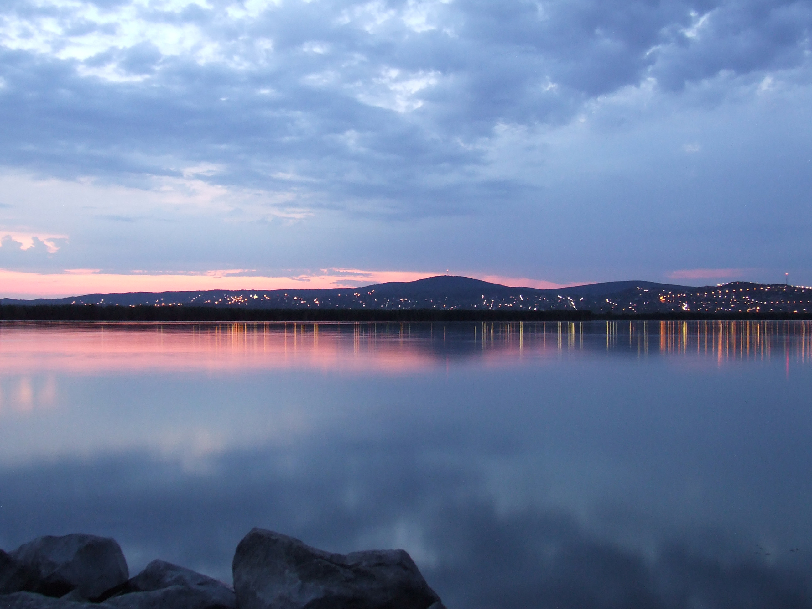
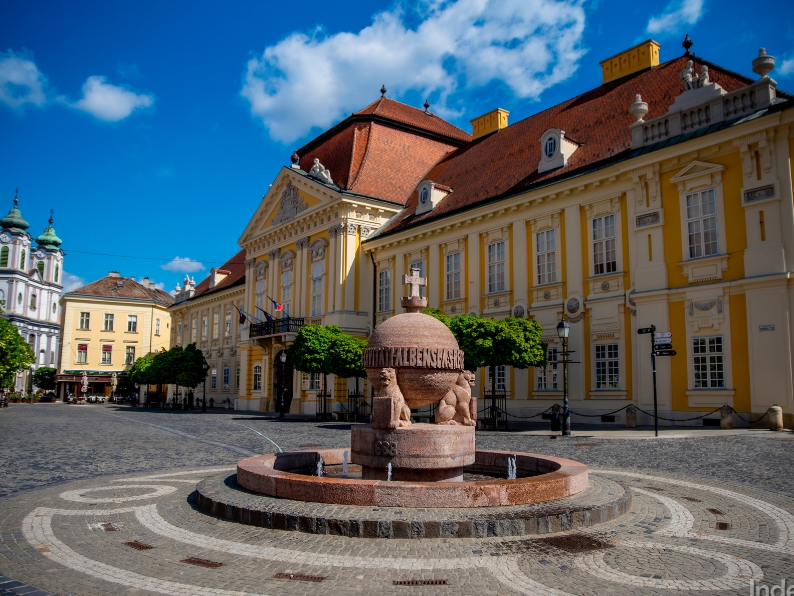

Warum lohnt sich ein Besuch in Pusztaszabolcs?
Pusztaszabolcs ist ein wichtiger Eisenbahnknotenpunkt und bietet zugleich eine ruhige ländliche Umgebung. Von hier aus sind der Velence-See und mehrere Ausflugsziele gut erreichbar.
Entdecke Pusztaszabolcs mit einem Klick!


Pusztaszabolcs ist ein wichtiger Eisenbahnknotenpunkt und bietet zugleich eine ruhige ländliche Umgebung. Von hier aus sind der Velence-See und mehrere Ausflugsziele gut erreichbar.

Der Velence-See ist ein beliebtes Ausflugsziel mit Stränden, Radwegen und Naturräumen. Durch das seichte Wasser erwärmt er sich schnell und eignet sich besonders gut für sommerliche Programme.
Route planen
Székesfehérvár ist eine der ältesten und geschichtlich wichtigsten Städte Ungarns. Die ehemalige Krönungsstadt bietet eine schöne Innenstadt, Denkmäler und viele kulturelle Ziele.
Route planen
Das Schloss Brunszvik in Martonvásár ist für seinen romantischen Park und seine Beethoven-Erinnerungen bekannt. Es ist ein ruhiges, elegantes Ziel für einen kurzen Ausflug.
Route planen